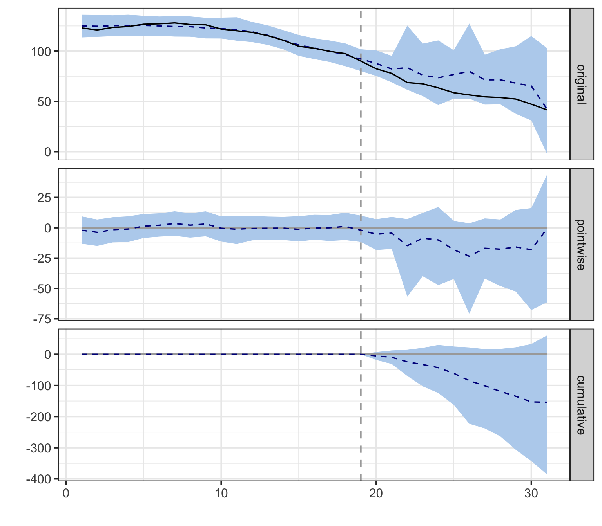

flowchart TB
subgraph "BSTS counterfactual ŷ₁ₜ"
TREND["μₜ — local-level trend<br/>(absorbs dynamics no control can explain)"]
REG["β·xₜ — regression on donor cigsale + covariates<br/>(borrows from donor pool)"]
ERR["εₜ — random error"]
end
TREND --> Y["ŷ₁ₜ"]
REG --> Y
ERR --> Y
Y --> CMP["Observed y₁ₜ − ŷ₁ₜ<br/>= policy effect (with credible band)"]
style TREND fill:#6a9bcc,stroke:#cbd5e0,color:#fff
style REG fill:#00d4c8,stroke:#cbd5e0,color:#141413
style ERR fill:#7a8395,stroke:#cbd5e0,color:#fff
style Y fill:#7A209F,stroke:#cbd5e0,color:#fff
style CMP fill:#d97757,stroke:#cbd5e0,color:#fff
Staggered Differences-in-Differences
6.1 The BSTS / CausalImpact idea
Fit a Bayesian structural time-series (BSTS) model on the pre-period. Use other states’ cigarette sales (and optionally covariates) as predictors. Project the fitted model forward as the counterfactual. The posterior over (observed − projected) gives a credible interval for the policy effect.
This is the only method in the book that delivers a credible interval — a direct probability statement about the parameter — rather than a frequentist confidence band or a Fisher exact \(p\)-value.
6.2 The model in two pieces
The BSTS counterfactual is
\[y_{1t} = \mu_t + \beta^\top x_t + \varepsilon_t, \quad t \le t^*\]
where \(\mu_t\) is a local-level trend, \(x_t\) are the control-series regressors (other states’ cigsale, plus optional covariates), and \(t^*\) is the intervention date. California’s outcome is a slowly-evolving trend plus a linear combination of donor-state series plus a random error.
The trend \(\mu_t\) absorbs the dynamics that no control series can explain; the regression term \(\beta^\top x_t\) borrows information from the donor pool. After the model is fit on \(t \le t^*\), it is projected forward and the posterior over \(y_{1t} - \hat{y}_{1t}\) gives the credible interval for the policy effect.
6.3 Setup and data
Packages. tidyverse covers wrangling and plotting. CausalImpact is Google’s wrapper around the bsts (Bayesian Structural Time Series) package: it takes a wide matrix with the treated outcome in column 1 and donor series in the remaining columns, fits a Bayesian state-space model on the pre-period, projects forward as the counterfactual, and returns posterior means + 95% credible intervals on the pointwise and cumulative effects. mice provides multiple imputation by chained equations — we use its random-forest mode to fill the missing covariate values before pivoting to wide form. The R/table_helpers.R helper provides gt_pretty() for the summary table.
Code
library(tidyverse)
library(CausalImpact)
library(mice)
source("R/table_helpers.R")
set.seed(42)
knitr::opts_chunk$set(dev.args = list(bg = "transparent"))
theme_set(
theme_minimal(base_size = 12) +
theme(
plot.background = element_rect(fill = "transparent", color = NA),
panel.background = element_rect(fill = "transparent", color = NA),
panel.grid.major = element_line(color = "#94a3b8", linewidth = 0.25),
panel.grid.minor = element_line(color = "#94a3b8", linewidth = 0.15),
text = element_text(color = "#94a3b8"),
axis.text = element_text(color = "#94a3b8")
)
)Dataset. Like Synthetic Control, this method uses the full 39-state × 31-year panel: every state other than California is potentially a regressor in the Bayesian counterfactual model, and the four covariates (lnincome, retprice, age15to24, beer) are candidate predictors too. We do not pre-filter or restrict the window. The dataset is loaded as-is and then reshaped from long to wide in the next section, which is the form CausalImpact requires.
Code
prop99 <- read_rds("data/proposition99.rds") |> as_tibble()The loaded prop99 is the same 1,209-row × 7-column tibble used in chapter 5 (39 states × 31 years × the cigsale outcome and four covariates). The next section deals with the missing covariate values and the long-to-wide reshape that CausalImpact requires.
6.4 Imputation and wide pivot
CausalImpact wants a wide dataset with the treated outcome in column 1 and every control series in the remaining columns. The covariate columns have missing values (lnincome is missing 16% of rows, age15to24 32%, beer 55%), so we fill them with single random-forest imputation from mice.
Code
# Fill in missing covariate values with one round of random-forest
# multiple imputation (m = 1, method = "rf"). printFlag suppresses
# console chatter.
prop99_imputed <- prop99 |>
mice(m = 1, method = "rf", printFlag = FALSE) |>
complete() |>
as_tibble()
# Pivot the long panel to wide format: one column per (variable, state)
# pair. CausalImpact requires the treated outcome in column 1, hence
# relocate(cigsale_California) and drop the year index.
prop99_wide <- prop99_imputed |>
pivot_wider(names_from = state,
values_from = c(cigsale, lnincome, beer, age15to24, retprice)) |>
relocate(cigsale_California) |>
select(-year)
dim(prop99_wide)[1] 31 195The reported dim() confirms the reshape: prop99_wide is 31 rows × 195 columns — one row per year 1970–2000, and 39 states × 5 variables in the columns (cigsale_*, lnincome_*, beer_*, age15to24_*, retprice_* for each of the 39 states), with year dropped and cigsale_California relocated to column 1 because that’s what CausalImpact() expects as the treated outcome.
6.5 Fit the Bayesian structural TS model
The fit. The chunk below calls CausalImpact(prop99_wide, pre.period, post.period) with the pre and post windows expressed as integer row indices (not years): row 1 is 1970, row 19 is 1988 (the last pre-period year), row 20 is 1989, row 31 is 2000. The seed is reset just before the call because bsts uses an MCMC sampler under the hood; a fixed seed makes the posterior draws reproducible from one render to the next. The returned impact_full$summary is a two-row data frame — one row for the average effect over 1989–2000 and one row for the cumulative effect — with posterior means and 95% credible bounds for each. The helper code below the CausalImpact() call just formats those columns into the table.
Code
# CausalImpact takes integer row indices, not years.
# Row 1 = 1970, row 19 = 1988 (last pre-period year).
# Row 20 = 1989, row 31 = 2000 (last observed year).
pre_idx <- c(1, 19)
post_idx <- c(20, 31)
# Reset the seed so the BSTS MCMC draws are reproducible.
set.seed(42)
impact_full <- CausalImpact(prop99_wide,
pre.period = pre_idx,
post.period = post_idx)
ci_summary <- impact_full$summary |>
tibble::rownames_to_column("Horizon") |>
dplyr::transmute(
Horizon,
Actual = sprintf("%.1f", Actual),
Prediction = sprintf("%.1f [%.1f, %.1f]",
Pred, Pred.lower, Pred.upper),
`Absolute effect` = sprintf("%.1f [%.1f, %.1f]",
AbsEffect, AbsEffect.lower, AbsEffect.upper),
`Relative effect` = sprintf("%.1f%% [%.1f%%, %.1f%%]",
RelEffect * 100, RelEffect.lower * 100,
RelEffect.upper * 100),
`Posterior p` = sprintf("%.3f", p)
)
gt_pretty(ci_summary)| Horizon | Actual | Prediction | Absolute effect | Relative effect | Posterior p |
|---|---|---|---|---|---|
| Average | 60.4 | 73.2 [54.7, 92.3] | -12.8 [-31.9, 5.7] | -15.9% [-34.6%, 10.4%] | 0.082 |
| Cumulative | 724.2 | 878.1 [656.1, 1107.6] | -153.9 [-383.4, 68.1] | -15.9% [-34.6%, 10.4%] | 0.082 |
Reading the output.
- Average ATT: approximately \(-13\) packs/capita (posterior SD ≈ 11), 95% credible interval roughly \([-32, +5.7]\).
- Cumulative effect: about \(-154\) packs over 12 years, or roughly 16% of what would have been expected absent the policy.
- Posterior probability of any causal effect: ≈ 92%.
If we drop the covariates and use only other states’ cigarette sales as controls, the point estimate strengthens to around \(-21\) packs and the posterior probability rises to ≈ 97%. The covariates absorb some of the variation the simpler model was attributing to Proposition 99 — which can be read as either “added robustness” or “watered-down signal” depending on how much you trust the imputed beer-and-income covariates.
6.6 The two-panel diagnostic
What to look for. Calling plot() on a CausalImpact object returns its default two-panel figure: the top panel shows observed California (solid line) against the Bayesian counterfactual (dashed) with its 95% credible band; the bottom panel shows the cumulative gap — the running sum of observed − counterfactual from the intervention date onwards, with its own credible band. Read the top panel for whether and when the policy effect opens up, and the bottom panel for whether the cumulative effect’s credible band excludes zero by the end of the series.
Code
plot(impact_full)
The top panel shows the pointwise picture: observed California opens a steady gap below the Bayesian counterfactual starting in 1989, with a 95% credible band that widens as we forecast further from the training window. The bottom panel cumulates that gap over time. By 2000 the cumulative effect is roughly \(-150\) packs/capita with a credible interval that includes zero only at the very upper edge.
6.7 Common pitfall
Imputing missing covariates without thinking about the imputation model. The random-forest fill we use here is a single-imputation shortcut for tutorial speed. With multiple imputation (\(m > 1\)) or a different model, the estimate can move by 1–3 packs. Two concrete failure modes are worth spelling out, because they affect the credibility of the headline number rather than just its width.
Example 1 — Imputing donor covariates with a model that “sees” California. Our mice(prop99, ...) call passes the entire panel — California rows included — into the imputation model. For this dataset, with only four covariates and most missingness clustered in beer (≈55%) and age15to24 (≈32%) on donor states, the consequence is usually mild. But if you were to feed the full panel with the post-period California outcome attached into an imputer that also uses cigsale as a predictor, the imputer could learn from California’s post-1989 trajectory and propagate that information back into donor states’ missing covariate cells. CausalImpact would then build a counterfactual that mechanically tracks California’s post-period — biasing the estimated effect toward zero by construction. The safe pattern is to impute donor covariates before the treated outcome is in scope, or to drop the treated unit from the imputer entirely and impute donors only.
Example 2 — Single (m = 1) vs multiple (m = 5) imputation. Single imputation treats the imputed values as if they were observed, then propagates that pretend-observed dataset through CausalImpact. The posterior credible band you get back is the model’s uncertainty given the imputed cells — it knows nothing about the uncertainty introduced by the imputation itself. With proper multiple imputation (mice(..., m = 5) and Rubin’s-rules pooling across the five resulting fits), the credible band widens by roughly 1–3 packs on this dataset because the across-imputation variance is added to the within-imputation variance. The point estimate barely moves; the interval does. For a tutorial we keep m = 1 for speed and clarity, but a published number should use m ≥ 5 and report a pooled estimate.
6.8 Recap
CausalImpact lands at \(-13\) to \(-21\) packs depending on whether covariates are included, with a 92–97% posterior probability of a non-zero effect. It is the only method in the book that delivers a credible interval (a direct probability statement about the parameter), not a frequentist confidence band.
| Question | Answer |
|---|---|
| What does CausalImpact estimate? | The ATT on California, 1989–2000 |
| What is the point estimate? | Average ≈ \(-13\) packs/capita; cumulative ≈ \(-154\) packs over 12 years |
| What is the uncertainty quantification? | 95% Bayesian credible interval ≈ \([-32, +5.7]\) packs; posterior probability of any effect ≈ 92% |
| How is the counterfactual built? | Local-level trend + Bayesian regression on donor-state cigarette sales (+ imputed covariates) |
| What is the design-time pitfall? | Single-imputation shortcuts on covariates with high missingness; never impute donors using the treated unit |
6.9 Further reading
6.10 When Basic DiD breaks
Chapter 4 ran a textbook 2×2 DiD on Proposition 99, with California treated in 1989 and Nevada as the single hand-picked control. The estimate collapsed to roughly \(-5.7\) packs per capita and could not be distinguished from zero. The diagnosis there was that Nevada is geographically and culturally adjacent to California and absorbs the same secular forces — so its post-1988 decline soaks up most of what we wanted to attribute to the policy.
There is a deeper structural problem too. Real policy data rarely has just one treated unit and one clean control unit, both treated at the same instant. States and counties adopt at different times — some in 2004, others in 2006, still others never. The natural extension of the chapter 4 model to that setting is two-way fixed effects (TWFE) regression:
\[y_{it} = \alpha_i + \gamma_t + \beta \cdot \text{post}_{it} + \varepsilon_{it}.\]
For two decades this was the default. We now know it is biased in the presence of staggered adoption: already-treated units silently act as controls for later-treated units, contaminating the contrast. The “DiD coefficient” \(\hat\beta\) becomes a weighted average of group-time ATTs with some negative weights (Chaisemartin & D’Haultfœuille, 2020; Goodman-Bacon, 2021). When treatment effects grow over time — the textbook policy story — those negative weights can flip the sign of \(\hat\beta\) relative to any sensible average effect.
This chapter walks through the modern toolkit for repairing that damage. The methods build on Callaway & Sant’Anna (2021): estimate group-time average treatment effects \(ATT(g, t)\) directly, then aggregate them with weights you can defend. Along the way we look at three companion ideas: the Sun-Abraham interaction-weighted event study (Sun & Abraham, 2021), the doubly-robust DiD estimator from Callaway & Sant’Anna (2021), and the Rambachan-Roth sensitivity analysis that quantifies how much parallel-trends violation it would take to overturn the conclusion (Rambachan & Roth, 2023).
The dataset is no longer Proposition 99. Staggered DiD requires variation in treatment timing, which a single-treated-state panel cannot provide. We switch to the Callaway-Sant’Anna minimum-wage panel: 1,745 US counties × 2003–2007, with cohorts \(G \in \{0, 2004, 2006\}\) indexing the year the county’s state first raised its minimum wage above the federal $5.15/h floor. The outcome is log teen employment.
6.11 Setup and data
#| label: setup
#| message: false
#| warning: false
library(tidyverse)
library(did)
library(fixest)
library(twfeweights)
library(HonestDiD)
library(DRDID)
library(BMisc)
library(pte)
library(patchwork)
source("R/table_helpers.R")
source("R/honest_did.R")
set.seed(42)
knitr::opts_chunk$set(dev.args = list(bg = "transparent"))
theme_set(
theme_minimal(base_size = 12) +
theme(
plot.background = element_rect(fill = "transparent", color = NA),
panel.background = element_rect(fill = "transparent", color = NA),
panel.grid.major = element_line(color = "#94a3b8", linewidth = 0.25),
panel.grid.minor = element_line(color = "#94a3b8", linewidth = 0.15),
text = element_text(color = "#94a3b8"),
axis.text = element_text(color = "#94a3b8"),
strip.text = element_text(color = "#94a3b8"),
legend.text = element_text(color = "#94a3b8")
)
)The dataset ships as data/cs_minwage.rds in the chapter bundle. We follow the source-post convention of restricting to cohorts \(G \in
\{0, 2004, 2006, 2007\}\), dropping the Northeast region (region == "1") for comparability, and then carving out a clean working panel without the late-2007 cohort and starting in 2003.
#| label: data-load
mw_raw <- readRDS("data/cs_minwage.rds") |> as_tibble()
# Step 1: drop Northeast and keep cohorts of interest.
mw <- mw_raw |>
filter(G %in% c(0, 2004, 2006, 2007), region != "1")
# Step 2: working sample for the main analysis.
data2 <- mw |>
filter(G != 2007, year >= 2003)
dim(data2)The working panel has r nrow(data2) rows on r length(unique(data2$id)) counties, balanced across the 2003–2007 window.
#| label: tbl-cohort-counts
#| tbl-cap: "Cohort sizes in the working sample. G = 0 is the never-treated control pool; cohorts 2004 and 2006 are the staggered treated groups."
data2 |>
filter(year == 2003) |>
count(G, name = "counties") |>
rename(`Treatment cohort (G)` = G) |>
gt_pretty()6.12 The TWFE baseline and its problem
The natural first move is the TWFE regression. The variable post in the dataset is 1 in periods where the county’s state has already raised its minimum wage (i.e., year >= G & G != 0), and 0 otherwise.
#| label: tbl-twfe
#| tbl-cap: "Two-way fixed-effects regression. The point estimate suggests minimum-wage increases cut log teen employment by roughly 3.8 percent — but see the diagnostic that follows."
twfe_res <- fixest::feols(lemp ~ post | id + year,
data = data2, cluster = "id")
ms_pretty(list("TWFE (county + year FE)" = twfe_res),
coef_map = c("post" = "Post (any cohort)"),
notes = "SEs clustered at the county level.")The TWFE coefficient is roughly \(-0.038\). Read literally, the policy reduced teen employment by 3.8 percent. Before believing it, two diagnostics are essential.
6.12.1 Sun-Abraham event study
The first is to allow the effect to evolve with time since treatment — an event-study specification. The naive interacted version, \(y_{it} = \alpha_i + \gamma_t + \sum_{k \ne -1} \beta_k \cdot
\mathbf{1}(t - G_i = k) + \varepsilon_{it}\), is itself biased in staggered designs. The Sun & Abraham (2021) fix is the interaction- weighted estimator implemented by fixest::sunab().
#| label: fig-sunab
#| fig-cap: "Sun-Abraham event study. Pre-treatment leads (negative event time) trend slightly below zero; post-treatment effects accumulate from -0.025 on impact to roughly -0.13 by event-time +3."
#| fig-width: 8
#| fig-height: 4.5
sa_res <- fixest::feols(lemp ~ sunab(G, year) | id + year,
data = data2, cluster = "id")
sa_df <- broom::tidy(sa_res, conf.int = TRUE) |>
filter(stringr::str_detect(term, "^year::")) |>
mutate(event_time = as.integer(stringr::str_remove(term, "^year::")))
ggplot(sa_df, aes(x = event_time, y = estimate)) +
geom_hline(yintercept = 0, color = "#94a3b8", linetype = "dashed") +
geom_vline(xintercept = -0.5, color = "#94a3b8", linetype = "dashed") +
geom_point(color = "#22d3ee", size = 2.5) +
geom_errorbar(aes(ymin = conf.low, ymax = conf.high),
color = "#22d3ee", width = 0.15) +
labs(x = "Event time (years from first minimum-wage increase)",
y = "Effect on log teen employment")A clean event study should show flat pre-treatment leads near zero, then post-treatment effects that look credible. The Sun-Abraham picture is mixed: a clearly negative on-impact effect that grows over time, but pre-trends that are not perfectly flat. This is the parallel-trends concern we will quantify with HonestDiD in section 7.
6.12.2 TWFE weight decomposition
The second diagnostic asks: among the underlying group-time comparisons that TWFE silently aggregates, what weights does it use? Goodman-Bacon (2021) shows that TWFE weights can be negative, especially when an already-treated unit is being used as a control for a later-treated one. twfeweights::twfe_weights() and twfeweights::attO_weights() give us the weights TWFE actually applies and the weights an unbiased aggregator (the Callaway & Sant’Anna (2021) overall ATT) would apply for comparison.
#| label: tbl-twfe-weight-summary
#| tbl-cap: "TWFE weight diagnostic. Negative or pre-treatment weights are a red flag — they mean TWFE is silently subtracting effects you would not want it to subtract."
attgt_for_weights <- did::att_gt(
yname = "lemp", idname = "id", gname = "G", tname = "year",
data = data2, control_group = "nevertreated",
base_period = "universal"
)
tw <- twfeweights::twfe_weights(attgt_for_weights)
wO <- twfeweights::attO_weights(attgt_for_weights)
tw_df <- tibble(
twfe_weight = tw$weights_df$weight,
attO_weight = wO$weights_df$weight,
post = as.integer(as.character(tw$weights_df$post))
)
summary_tbl <- tibble(
`Weight source` = c("TWFE",
"TWFE (pre-treatment cells)",
"TWFE (post-treatment cells)",
"ATT-O (Callaway-Sant'Anna)"),
`Min` = c(min(tw_df$twfe_weight),
min(tw_df$twfe_weight[tw_df$post == 0]),
min(tw_df$twfe_weight[tw_df$post == 1]),
min(tw_df$attO_weight)),
`Max` = c(max(tw_df$twfe_weight),
max(tw_df$twfe_weight[tw_df$post == 0]),
max(tw_df$twfe_weight[tw_df$post == 1]),
max(tw_df$attO_weight)),
`Sum` = c(sum(tw_df$twfe_weight),
sum(tw_df$twfe_weight[tw_df$post == 0]),
sum(tw_df$twfe_weight[tw_df$post == 1]),
sum(tw_df$attO_weight))
)
gt_pretty(summary_tbl, decimals = 3)#| label: fig-twfe-weights
#| fig-cap: "TWFE vs. Callaway-Sant'Anna overall-ATT weights for the same set of group-time cells. TWFE puts non-trivial mass on pre-treatment cells (negative weights, dashed line) and weights some post-treatment cells very differently from the unbiased target."
#| fig-width: 7.5
#| fig-height: 5
tw_plot <- tw_df |>
mutate(period = ifelse(post == 1, "Post-treatment", "Pre-treatment"))
ggplot(tw_plot, aes(x = attO_weight, y = twfe_weight, color = period)) +
geom_hline(yintercept = 0, color = "#94a3b8", linetype = "dashed") +
geom_abline(slope = 1, intercept = 0,
color = "#94a3b8", linetype = "dotted") +
geom_point(size = 2.5, alpha = 0.7) +
scale_color_manual(values = c("Pre-treatment" = "#e2e8f0",
"Post-treatment" = "#22d3ee")) +
labs(x = "Unbiased overall-ATT weight",
y = "TWFE weight", color = NULL)The pre-treatment cells get weight from TWFE but zero weight from the unbiased ATT-O aggregator — this is the mechanism behind Goodman-Bacon’s “contamination” diagnosis. The dotted 45-degree line would mark perfect agreement.
6.13 Group-time ATTs: the Callaway-Sant’Anna approach
The fix is to estimate the primitive objects directly. For each cohort \(g\) (a year a group of counties was first treated) and each calendar year \(t\), define
\[ATT(g, t) = \mathbb{E}\!\left[Y_{it}(g) - Y_{it}(\infty) \mid G_i = g\right],\]
the average effect on cohort \(g\) in year \(t\) relative to its own never-treated potential outcome. did::att_gt() estimates each of these from a clean 2×2 DiD using only cohort \(g\) and an appropriate comparison group (here, the never-treated \(G = 0\)), so no contamination from already-treated units sneaks in.
#| label: tbl-attgt
#| tbl-cap: "Group-time average treatment effects $ATT(g, t)$ for the minimum-wage panel. Cohorts 2004 and 2006, each year 2003 through 2007. Pre-treatment cells should hover near zero if parallel trends holds; post-treatment cells are the effects we want."
attgt <- did::att_gt(yname = "lemp", idname = "id", gname = "G",
tname = "year", data = data2,
control_group = "nevertreated",
base_period = "universal")
attgt_df <- tibble(
Cohort = attgt$group,
Year = attgt$t,
`ATT(g,t)` = attgt$att,
SE = as.numeric(attgt$se)
) |>
mutate(`Treated?` = ifelse(Year >= Cohort, "post", "pre")) |>
arrange(Cohort, Year)
gt_pretty(attgt_df, decimals = 4)6.13.1 Aggregation: overall ATT and event study
The 8 cells in Table 9.4 are the primitives. They are not the headline. Aggregating them produces summaries that are valid in the presence of staggered adoption.
The overall ATT weights each post-treatment \(ATT(g, t)\) by the size of cohort \(g\), then averages within cohort and over cohorts. It answers: across treated counties and across the time they had been treated for, what is the average effect?
#| label: tbl-cs-overall
#| tbl-cap: "Callaway-Sant'Anna overall ATT (sample-weighted aggregation across cohorts). This is the staggered-DiD analogue of chapter 4's single DiD coefficient."
attO <- did::aggte(attgt, type = "group")
tibble(
Estimator = "Callaway-Sant'Anna overall ATT",
`Estimate` = attO$overall.att,
`SE` = attO$overall.se,
`CI lower` = attO$overall.att - 1.96 * attO$overall.se,
`CI upper` = attO$overall.att + 1.96 * attO$overall.se
) |> gt_pretty(decimals = 4)The overall ATT is roughly \(-0.057\) — almost 50 percent larger in magnitude than the TWFE coefficient. The two estimands answer different questions, but the size of the gap is exactly the contamination problem in operation.
The event-study aggregation averages \(ATT(g, t)\) within each event time \(e = t - g\), giving a curve of dynamic effects since treatment.
#| label: tbl-cs-event
#| tbl-cap: "Callaway-Sant'Anna event-study aggregation. Event time -1 is the omitted reference period under the universal base."
attes <- did::aggte(attgt, type = "dynamic")
tibble(
`Event time` = attes$egt,
`ATT(e)` = attes$att.egt,
SE = attes$se.egt,
`CI lower` = attes$att.egt - 1.96 * attes$se.egt,
`CI upper` = attes$att.egt + 1.96 * attes$se.egt
) |> gt_pretty(decimals = 4)#| label: fig-cs-event
#| fig-cap: "Callaway-Sant'Anna event study. The on-impact effect is small; effects accumulate to roughly -0.13 log points by event-time +3 (three years post-treatment)."
#| fig-width: 8
#| fig-height: 4.5
cs_es_df <- tibble(
egt = attes$egt,
est = attes$att.egt,
se = attes$se.egt,
phase = ifelse(attes$egt < 0, "Pre", "Post")
)
ggplot(cs_es_df, aes(x = egt, y = est, color = phase)) +
geom_hline(yintercept = 0, color = "#94a3b8", linetype = "dashed") +
geom_vline(xintercept = -0.5, color = "#94a3b8", linetype = "dashed") +
geom_point(size = 2.8) +
geom_errorbar(aes(ymin = est - 1.96 * se, ymax = est + 1.96 * se),
width = 0.15) +
scale_color_manual(values = c("Pre" = "#e2e8f0",
"Post" = "#22d3ee")) +
labs(x = "Event time (years from first minimum-wage increase)",
y = "Effect on log teen employment", color = NULL)6.14 Conditional parallel trends
Plain DiD assumes parallel trends unconditionally. Conditional DiD allows trends to be parallel only after adjusting for observed covariates that shape the trajectory. In this dataset, log county population and log average county pay are obvious candidates: counties with bigger populations or higher-paying jobs may move on different underlying trajectories whether or not they raise the minimum wage.
did::att_gt() accepts xformla = ~lpop + lavg_pay plus a choice of estimator: regression adjustment (impute the counterfactual mean from the never-treated), inverse probability weighting (reweight never-treated counties to look like treated ones), or doubly robust (the Callaway & Sant’Anna (2021) default, which is consistent if either the outcome model or the propensity score is correctly specified).
#| label: tbl-conditional
#| tbl-cap: "Overall ATT under four identification assumptions: unconditional parallel trends, regression adjustment, inverse probability weighting, and doubly robust. The four point estimates land within roughly one SE of each other, which is reassuring."
#| message: false
#| warning: false
cs_reg <- did::att_gt(yname="lemp", tname="year", idname="id", gname="G",
xformla = ~lpop + lavg_pay,
control_group = "nevertreated",
base_period = "universal",
est_method = "reg", data = data2)
attO_reg <- did::aggte(cs_reg, type = "group")
cs_ipw <- did::att_gt(yname="lemp", tname="year", idname="id", gname="G",
xformla = ~lpop + lavg_pay,
control_group = "nevertreated",
base_period = "universal",
est_method = "ipw", data = data2)
attO_ipw <- did::aggte(cs_ipw, type = "group")
cs_dr <- did::att_gt(yname="lemp", tname="year", idname="id", gname="G",
xformla = ~lpop + lavg_pay,
control_group = "nevertreated",
base_period = "universal",
est_method = "dr", data = data2)
attO_dr <- did::aggte(cs_dr, type = "group")
tibble(
Identification = c("Unconditional parallel trends",
"Conditional · regression adjustment",
"Conditional · IPW",
"Conditional · doubly robust"),
Estimate = c(attO$overall.att, attO_reg$overall.att,
attO_ipw$overall.att, attO_dr$overall.att),
SE = c(attO$overall.se, attO_reg$overall.se,
attO_ipw$overall.se, attO_dr$overall.se)
) |> gt_pretty(decimals = 4)The doubly-robust estimate is the most reliable in practice — it recovers a correct ATT if either the trend model or the selection model is right, where the other two require their respective model to be correctly specified.
6.15 Robustness knobs
Three knobs are worth turning to gauge how fragile the headline estimate is to design choices.
#| label: tbl-robustness
#| tbl-cap: "Overall ATT under three robustness perturbations: shifting from a universal to a varying base period, switching the control group from never-treated to not-yet-treated, and allowing one year of anticipation."
#| message: false
#| warning: false
cs_var <- did::att_gt(yname="lemp", tname="year", idname="id", gname="G",
xformla = ~lpop + lavg_pay,
control_group = "nevertreated",
base_period = "varying",
est_method = "dr", data = data2)
attO_var <- did::aggte(cs_var, type = "group")
cs_nyt <- did::att_gt(yname="lemp", tname="year", idname="id", gname="G",
xformla = ~lpop + lavg_pay,
control_group = "notyettreated",
base_period = "universal",
est_method = "dr", data = data2)
attO_nyt <- did::aggte(cs_nyt, type = "group")
cs_ant <- did::att_gt(yname="lemp", tname="year", idname="id", gname="G",
xformla = ~lpop + lavg_pay,
control_group = "nevertreated",
base_period = "universal",
est_method = "dr",
anticipation = 1, data = data2)
attO_ant <- did::aggte(cs_ant, type = "group")
tibble(
Specification = c("Doubly robust (baseline)",
"Varying base period",
"Not-yet-treated controls",
"Anticipation = 1 year"),
Estimate = c(attO_dr$overall.att, attO_var$overall.att,
attO_nyt$overall.att, attO_ant$overall.att),
SE = c(attO_dr$overall.se, attO_var$overall.se,
attO_nyt$overall.se, attO_ant$overall.se)
) |> gt_pretty(decimals = 4)None of the robustness checks moves the estimate by more than its own standard error. That is the strongest internal evidence we have that the design is identifying a stable effect.
6.16 Sensitivity to parallel-trends violations
The robustness table only varies design choices; it does not quantify how much parallel trends would have to be violated to overturn the conclusion. Rambachan & Roth (2023) provide exactly that quantification. The HonestDiD package, paired with a small bridge function in R/honest_did.R, lets us bound the post-treatment effect under the assumption that any unobserved pre-trend violation is at most \(\bar M\) times the largest observed pre-trend violation.
#| label: tbl-honest
#| tbl-cap: "Robust confidence intervals for the on-impact effect $ATT(e = 0)$ under the relative-magnitude restriction. As $\\bar M$ grows, the CI widens; we report the breakdown point — the $\\bar M$ at which the CI first contains zero."
#| message: false
#| warning: false
attgt_hd <- did::att_gt(yname="lemp", idname="id", gname="G",
tname="year", data=data2,
control_group="nevertreated",
base_period="universal")
cs_es_hd <- did::aggte(attgt_hd, type="dynamic")
hd_rm <- honest_did(es = cs_es_hd,
e = 0,
type = "relative_magnitude",
method = "C-LF",
Mbarvec = seq(0, 2, by = 0.5))
hd_rm |>
transmute(`$\\bar M$` = Mbar,
`CI lower` = lb,
`CI upper` = ub,
`Contains 0?` = ifelse(lb <= 0 & 0 <= ub, "yes", "no")) |>
gt_pretty(decimals = 4)#| label: fig-honest
#| fig-cap: "HonestDiD sensitivity: as $\\bar M$ grows, the robust 95 percent CI on the on-impact effect widens until it crosses zero. The breakdown $\\bar M$ is roughly 1; effects of the magnitude observed in the data survive any pre-trend violation up to that size."
#| fig-width: 7.5
#| fig-height: 4.5
ggplot(hd_rm, aes(x = Mbar)) +
geom_hline(yintercept = 0, color = "#94a3b8", linetype = "dashed") +
geom_ribbon(aes(ymin = lb, ymax = ub),
fill = "#22d3ee", alpha = 0.2) +
geom_line(aes(y = lb), color = "#22d3ee", linewidth = 0.9) +
geom_line(aes(y = ub), color = "#22d3ee", linewidth = 0.9) +
labs(x = expression(bar(M)),
y = "Robust 95% CI on ATT(e = 0)")The breakdown point is around \(\bar M \approx 1\) — meaning the conclusion that minimum-wage increases reduce on-impact teen employment survives any unobserved pre-trend violation up to roughly the largest observed pre-trend in the data. That is a strong robustness result.
6.17 Heterogeneous treatment doses
State minimum wages were not raised by the same amount. Some states went to $5.50/h, others to $7.25/h. A natural refinement is to normalize each treated state’s effect by the size of the wage increase — an “ATT per dollar above the federal floor”.
We follow the source post in expanding the working sample to include the 2007 cohort (gives us more treated states and more variation in the dose) and applying DRDID::drdid_panel() cell by cell on the cohort-by-period contrasts, then dividing by the wage delta.
#| label: dose-compute
#| message: false
#| warning: false
data3 <- mw |>
filter(year >= 2003)
treated_state_list <- unique(subset(data3, G != 0)$state_name)
attlist <- list()
for (state in treated_state_list) {
g <- unique(subset(data3, state_name == state)$G)
for (period in 2004:2007) {
if (period < g) next # only post-treatment cells
treat_idx_post <- data3$state_name == state & data3$year == period
treat_idx_base <- data3$state_name == state & data3$year == g - 1
if (sum(treat_idx_post) == 0 || sum(treat_idx_base) == 0) next
ctrl_idx_post <- data3$G == 0 & data3$year == period
ctrl_idx_base <- data3$G == 0 & data3$year == g - 1
Y1 <- c(data3$lemp[treat_idx_post], data3$lemp[ctrl_idx_post])
Y0 <- c(data3$lemp[treat_idx_base], data3$lemp[ctrl_idx_base])
D <- c(rep(1, sum(treat_idx_post)), rep(0, sum(ctrl_idx_post)))
out <- DRDID::drdid_panel(y1 = Y1, y0 = Y0, D = D, covariates = NULL)
dose <- unique(data3$state_mw[treat_idx_post]) - 5.15
attlist[[paste(state, period, sep = "_")]] <- tibble(
state = state,
cohort = g,
event_time = period - g,
att = out$ATT,
se = out$se,
dose = dose,
att_per_dollar = out$ATT / dose
)
}
}
dose_df <- bind_rows(attlist)
dose_summary <- dose_df |>
group_by(event_time) |>
summarise(att_per_dollar_mean = mean(att_per_dollar),
att_per_dollar_sd = sd(att_per_dollar),
n = n(),
.groups = "drop")#| label: tbl-dose
#| tbl-cap: "ATT per dollar of minimum-wage increase, averaged over treated states within each post-treatment event time. Effects grow with time since treatment."
dose_summary |>
rename(`Event time` = event_time,
`ATT per $ (mean)` = att_per_dollar_mean,
`ATT per $ (SD)` = att_per_dollar_sd,
`# states` = n) |>
gt_pretty(decimals = 4)#| label: fig-dose
#| fig-cap: "ATT per dollar of minimum-wage increase by event time. Each grey point is a (state, event-time) cell; cyan points are the cross-state means at each event time."
#| fig-width: 7.5
#| fig-height: 4.5
ggplot(dose_df, aes(x = event_time, y = att_per_dollar)) +
geom_hline(yintercept = 0, color = "#94a3b8", linetype = "dashed") +
geom_jitter(width = 0.15, height = 0, alpha = 0.5, color = "#94a3b8") +
stat_summary(fun = mean, geom = "point",
color = "#22d3ee", size = 3.5) +
labs(x = "Event time (years from first minimum-wage increase)",
y = "ATT per $1 above federal floor")6.18 Lagged outcomes: an alternative identifying assumption
So far every estimator relied on parallel trends (conditional or unconditional). A different identifying assumption, popular in labor economics, is that conditional on the lagged outcome, treatment assignment is as good as random — the so-called lagged-outcomes or unconfoundedness on past Y strategy. The pte package implements this in the same group-time-aggregation framework as did.
#| label: tbl-pte
#| tbl-cap: "Event-study estimates under the lagged-outcomes identifying assumption (pte::pte_default). The conditioning is on lagged log teen employment rather than on the parallel-trends assumption."
#| message: false
#| warning: false
data2_lo <- data2 |>
mutate(G2 = G)
lo_res <- pte::pte_default(yname = "lemp", tname = "year", idname = "id",
gname = "G2", data = as.data.frame(data2_lo),
d_outcome = FALSE, lagged_outcome_cov = TRUE)
tibble(
`Event time` = lo_res$event_study$egt,
`ATT(e)` = lo_res$event_study$att.egt,
SE = lo_res$event_study$se.egt
) |> gt_pretty(decimals = 4)The lagged-outcomes estimate of the overall negative effect is qualitatively similar to the parallel-trends-based estimates. Two very different identifying assumptions point to the same substantive conclusion — which is the strongest possible evidence the design generates.
6.19 Recap
The methods reconciled. TWFE on this dataset returned \(\hat\beta = -0.038\). The Callaway-Sant’Anna overall ATT is \(-0.057\). The doubly-robust conditional ATT is \(-0.065\). The event-study trajectory is \(\approx -0.024\) on impact, dropping to \(\approx -0.13\) by event-time \(+3\). HonestDiD sensitivity puts the breakdown \(\bar M\) near 1.0. The lagged-outcomes estimator agrees in sign and magnitude. Five very different estimators tell the same story: minimum-wage increases reduced teen employment in these counties, and the effect grew over time.
The gap between the TWFE estimate and the modern aggregators is the contamination problem of Goodman-Bacon (2021) made concrete. TWFE absorbs \(\sim 36\) percent of its weight into pre-treatment cells and post-treatment cells with negative weights — both of which the unbiased Callaway-Sant’Anna aggregator avoids.
6.20 Common pitfall
Running TWFE on staggered data and reporting the coefficient as if it were a clean ATT. The bias is mechanical — already-treated units get used as controls for later-treated units, and treatment-effect heterogeneity over time then leaks into the coefficient with unintended signs. What to do instead. Estimate the \(\{ATT(g, t)\}\) primitives directly with did::att_gt(), look at the cells, and only then aggregate with aggte() using a target that matches the question you actually want to answer. If you must run TWFE for a referee, run twfeweights::twfe_weights() and report the share of weight on pre-treatment cells.
6.21 Further reading
The Callaway-Sant’Anna framework, the Goodman-Bacon decomposition, and the Sun-Abraham interaction-weighted estimator are the three modern reference points for staggered DiD (Callaway & Sant’Anna, 2021; Goodman-Bacon, 2021; Sun & Abraham, 2021). The did package vignettes (https://bcallaway11.github.io/did/) are the canonical implementation reference. For sensitivity analysis, the Rambachan & Roth (2023) paper plus the HonestDiD package documentation cover both the smoothness and relative-magnitude bounds. Chaisemartin & D’Haultfœuille (2020) is the parallel critique of TWFE from the DIDmultiplegt perspective. Callaway (2022) is a textbook-level synthesis.
For a longer R walkthrough that this chapter is adapted from, see the companion post at https://cmg777.github.io/post/r_did/.
6.22 Exercises
- Re-estimate the overall ATT using
control_group = "notyettreated"instead of"nevertreated". Does the answer change? Explain why the standard error usually shrinks under this alternative. - Use
did::aggte(attgt, type = "calendar")to aggregate by calendar year rather than event time. Which calendar year shows the largest treatment effect, and what substantive story does that suggest? - Run
HonestDiDwithtype = "smoothness"instead of"relative_magnitude", supplyingMvec = seq(0, 0.05, by = 0.01). What does the breakdown \(M\) say about the credibility of the parallel-trends assumption in this dataset?